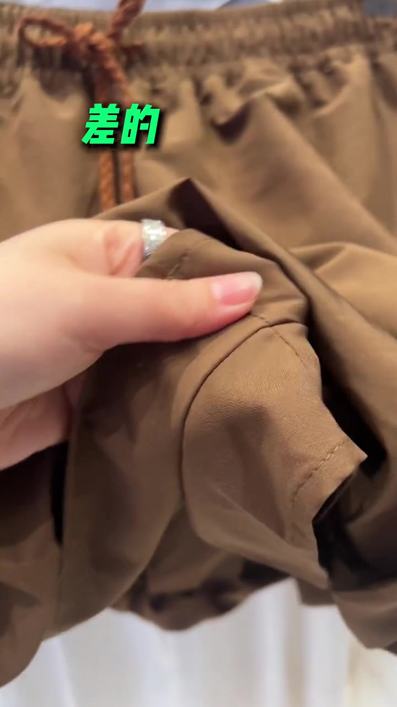
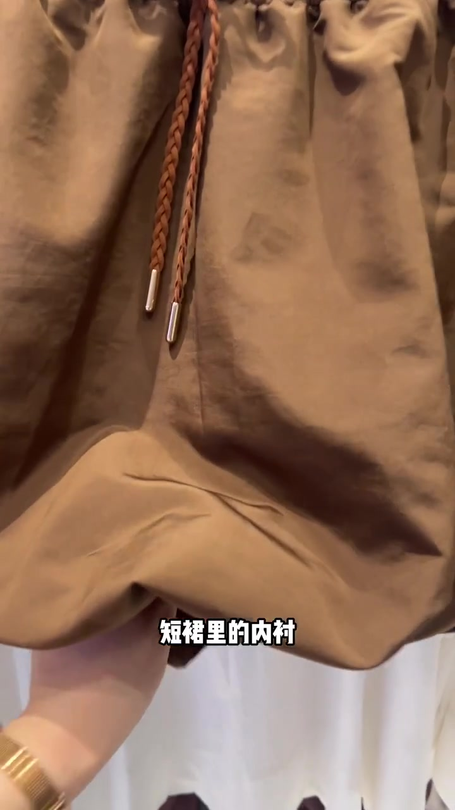
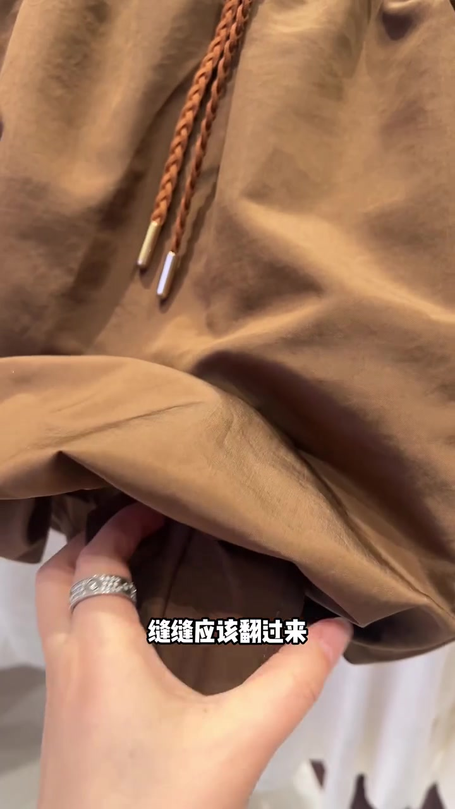
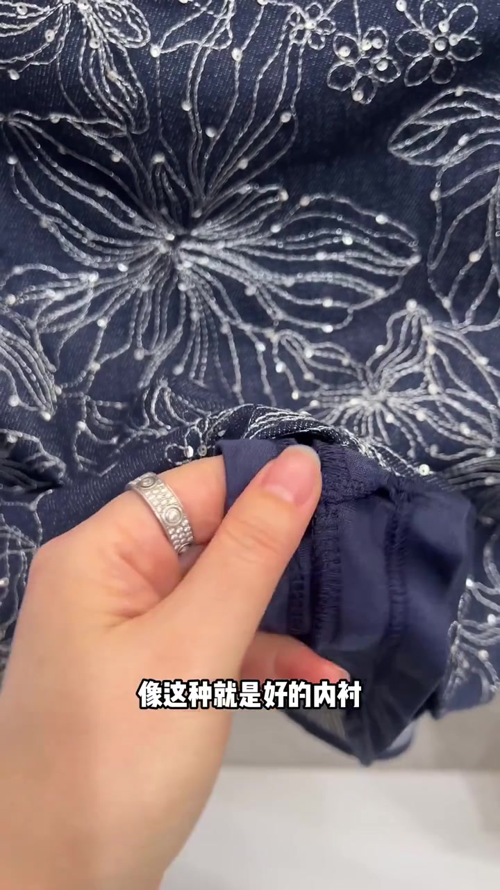
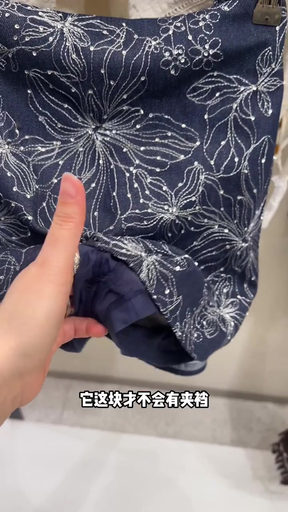
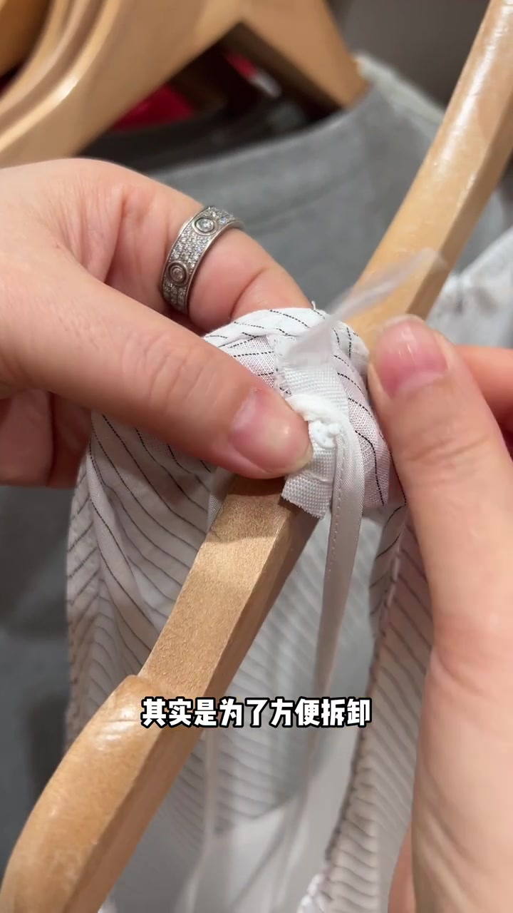
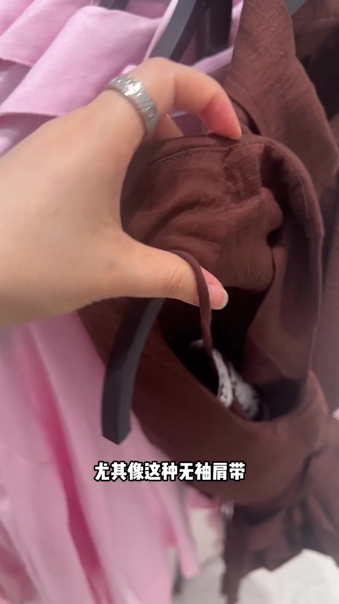
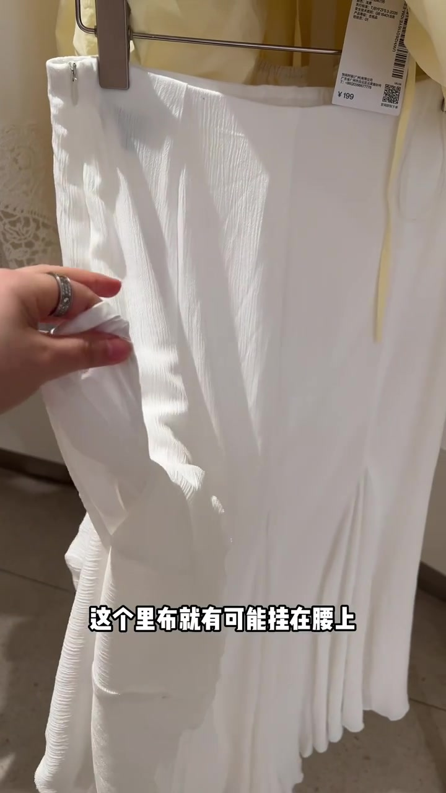

先别被面料骗了，先翻内衬
开场不到两秒，画面连续打出绿色“差的”和黄色“好的”。一边是棕褐色短裤被拉开口袋侧缝，一边是深蓝绣花裙/短裤被翻起里布。整条片子不是讲穿搭公式，而是让你在店里也能做的细节检查。
说明：Whisper 固定以中文模型识别，常把“差的”听成“叉子”、“短裙”听成“短球”、“夹裆/异物感”听成“甲当/义务感”。下文叙述以可见字幕与画面为准；页面末尾仍完整保留全部 40 段原始转录。
差的 / 好的：同一动作，两套结论
手伸进棕色短裤侧边，字幕先标“差的”；紧接着深蓝绣花面料被翻起，字幕换成“好的”。对比不是靠价格牌，而是靠内衬做法是否经得起翻开查看。
可见字幕对照：差的 → 好的（Whisper 将前两处“差的”识别为“叉子”）

短裙内衬：缝缝朝外才是好的
字幕点明“短裙里的内衬”，并反问“你是不是以为是好的”。随后立刻纠正：这种缝缝朝向反而是不好的；“缝缝应该翻过来，做到外面的才是好的”。
画面继续翻棕色短裤/短裙内层，金属头抽绳、缝线与里布走向被特写。接着切到深蓝绣花款，字幕收成“像这种就是好的内衬”。
可见字幕：“缝缝应该翻过来”“做到外面的才是好的”“像这种就是好的内衬”


内衬不只防走光，还要蹲坐不夹裆
深蓝绣花款被再次翻开。讲述者说内衬除了防走光，还要考虑舒适：蹲下或坐下时，这块里布才不会有夹裆或异物感。画面手势指向裆部对应区域，把“好看”落到可体感的穿着细节。
可见字幕方向：“内衬除了防走光以外”“另外考虑到舒适”“它这块才不会有夹裆”


肩线小角按扣：方便拆卸，穿时扣好
镜头切到白底细条纹上衣（画面可见 UNIQLO 标）。肩线内里有一个小角按扣，讲述者解释是为了方便拆卸内衬；需要时拿下来，穿的时候扣好。随后演示肩带/挂带固定到衣架，字幕落点是“就不会掉下来”。
可见字幕：“肩线内里”“其实是为了方便拆卸”“就不会掉下来”

普通无袖肩带：没有固定就容易跑
对比出现了：普通款“什么都没有”，尤其无袖肩带没有固定，特别容易跑下来。画面捏住棕色无袖吊带，旁边还有粉色挂装，强调细肩带更需要固定结构。
可见字幕：“尤其是这种无袖肩带”（Whisper 写作“无绣 / 甲带”）

不可拆卸内衬：看下摆两侧有没有固定线
最后一套检查方法更直接：不可拆卸内衬，就看下摆两侧有没有固定线；有就是好的。侧边没有任何固定线的，被认为“稍微差点事”。
收尾用尴尬场景收束：上完厕所回来，一个不小心，里布可能挂在腰上没下来。画面里白色褶皱裙被翻出里布，价签约 ¥199，把抽象“差点事”落到具体生活事故。
可见字幕：“你就直接去看它下摆两侧”“有就是好的”“这个里布就有可能挂在腰上”

47 秒看完留下什么
视频按时间给出三条可执行检查：内衬缝缝是否翻到外侧、肩线是否有可拆卸/固定结构、下摆两侧是否有固定线。它回答的是“店里怎么翻、翻什么”，不是某件单品的购买结论。